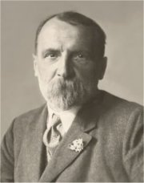
V únoru 1894 byla skupina studentů a mladých dělníků falešně obviněna z tajného spolčování. Ve vykonstruovaném procesu s tzv. Omladinou bylo 68 pokrokářů odsouzeno do vězení, ale už roku 1895 byli amnestováni, včetně Neumanna.
|
ANARCHISTÉ A BUŘIČI
Vůdčí osobností českého anarchistického hnutí byl spisovatel Stanislav Kostka Neumann, v jehož olšanské vile se scházeli revoltující mladíci. Obdobím radikálního odporu k společenským normám prošel také Viktor Dyk, Fráňa Šrámek, Karel Toman, František Gellner nebo Jiří Mahen a Rudolf Těsnohlídek. Pro tuto generaci spisovatelů se vžilo označení buřiči. Žili bohémským životem, jejich díla byla zakazována a řada z nich se dostala do konfliktu s rakouskými úřady a strávila několik měsíců ve vězení. V mládí je spojovalo přátelství, ale během 20. století se jejich cesty rozešly. Neumann se obrátil k novým směrům (vitalismus, civilismus, proletářské umění), Dyk se po vzniku samostatného Československa přiklonil k politické pravici, Šrámek psal senzualistické knihy blízké vitalismu a impresionismu, Toman se věnoval milostné lyrice a Gellnerův život ukončila 1. světová válka.
Ke zmíněným autorům můžeme přiřadit i Petra Bezruče, který se sice nehlásil přímo k anarchismu, ale jeho tvorba měla podobný charakter i osud.
|
Anarchisté se hlásili k radikálnímu individualismu, vyznávali naprostou svobodu jednotlivce a bojovali proti všemu, co ji omezuje – společenským normám, právnímu řádu i státu a jeho institucím. Velmi často se dostávali do střetu s oficiální mocí. Někteří stoupenci anarchismu se uchýlili k nejkrajnějším prostředkům a zosnovali atentáty na nejvyšší představitele vládnoucího režimu. V Rakousku-Uhersku to byla vražda císařovny Alžběty (Sisi) nebo arcivévody Ferdinanda d’Este. Významnými ideology anarchistického hnutí byli Godwin, Stirner, Proudhon, Bakunin, Kropotkin nebo Sorel. Manifest anarchistů českých vyšel roku 1896.
|
Stanislav Kostka Neumann
(1875-1947)
Neumann pocházel z Prahy, kde také zemřel. Byl zatčen a odsouzen v procesu s tzv. Omladinou. Ve vězení strávil 14 měsíců. V jeho olšanské vile na Žižkově se scházeli čeští anarchisté včetně spisovatelů (Šrámek, Toman, Gellner). Neumann byl velmi aktivním iniciátorem kulturního a společenského dění. Sám prošel bouřlivým uměleckým i názorovým vývojem od dekadence a symbolismu přes anarchismus až k proletářské poezii. Vydával anarchistický časopis Nový kult (1897-1905). Napsal řadu básnických sbírek a novinových článků. V knihách Dějiny lásky, Dějiny ženy a Francouzská revoluce zabrousil i do historie.
|
Neumannova poezie
Na začátku své literární dráhy vydal Neumann řadu básnických sbírek, které měly blízko k dekadenci, symbolismu a vypjatému individualismu – Nemesis, bonorum custos (Spravedlnost, ochránkyně dobrých), Jsem apoštol nového žití, Apostrofy hrdé a vášnivé, Satanova sláva mezi námi a Sen o zástupu zoufajících. Později ho zaujaly jiné moderní umělecké směry.
|
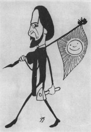
Neumann na Gellnerově karikatuře
Jaké je tvoje životní krédo? Zjisti původní význam tohoto slova.
|
Viktor Dyk (1877-1931)
Dyk pocházel z Pšovky u Mělníka, utopil se v moři nedaleko jugoslávského Lopudu u Dubrovníku, když mu selhalo srdce. Na pražském gymnáziu v Žitné ulici ho učil dějepis Alois Jirásek, vystudoval práva, ale živil se jako novinář a spisovatel. Po Sládkovi převzal redigování časopisu Lumír (1907-1931). Během 1. světové války byl půl roku vězněn kvůli podezření z velezrady. Po vzniku Československa se stal politikem národně demokratické strany. Proslul jako satirik a nesmlouvavý polemik. Kromě řady básnických sbírek je autorem lyrickoepické skladby Milá sedmi loupežníků, dramatizace Cervantesova románu Zmoudření dona Quijota, novely Krysař nebo sbírky povídek Píseň o vrbě. Napsal libreto pro Janáčkovu operu Výlety páně Broučkovy a překládal prokleté básníky. Jeho kniha Buřiči dala jméno celé generaci spisovatelů.
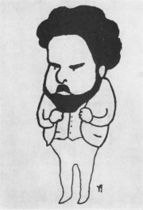
Dyk na Gellnerově karikatuře
|
Dykovy básně
Dyk začínal jako dekadent a symbolista, jak napovídají názvy jeho básnických sbírek A porta inferi (Před branami pekla) a Síla života. Vrcholem jeho tvorby jsou satirické knihy Marnosti, Satiry a sarkasmy a Pohádky z naší vesnice. Ve vězení napsal slavnou báseň Země mluví, kterou později zařadil do jedné ze sbírek z
tzv. válečné tetralogie – Lehké a těžké kroky, Anebo, Okno, Poslední rok. Jeho poslední básnická sbírka nese název Devátá vlna.
Viktor Dyk: Krysař
Temná próza zpracovává známou legendu o krysaři, který zbavil město Hameln obtížných krys, ale když nedostal za svou práci zaplaceno, pomocí magické píšťaly stejným způsobem utopil jeho obyvatele...
Dykův krysař je tajemným poutníkem bez domova. Po příchodu do Hameln se zamiluje do Agnes, která ale čeká dítě s Kristiánem. Z nešťastné lásky se Agnes pomine, vystoupá na horu Koppel, o níž praví legenda, že tudy vede cesta do krásné země sedmihradské, spadne do propasti a utopí se. Nešťastný krysař dovede k propasti všechny obyvatele. Zachrání se pouze bláznivý rybář Sepp Jörgen a nevinné dítě.
Temnou atmosféru umocňují Dykovy popisy nebo motiv krysařova setkání s Faustem.
|
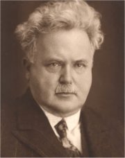
Jak na tebe působí Dykovy básně?
Ke kterému spisovateli má Dyk nejblíže? Proč?
Jaký je rozdíl mezi epigramem a epitafem?
Který spisovatel před Dykem nazval svou knihu Pohádky z naší vesnice?
Zjisti, proč byl Dyk vězněn.

Hanuš Schwaiger: Krysař
Co si myslíš o postavě krysaře?
Jak na tebe působí ukázky z Dykova Krysaře?
Historikové našli v legendě o krysaři reálný základ. Středověké německé město prý skutečně opustili jeho obyvatelé – zřejmě odešli jako kolonizátoři do Čech zakládat nové osady.
|
Fráňa Šrámek (1877-1952)
Šrámek se narodil v Sobotce a zemřel v Praze. Gymnaziální léta strávil v Písku. Byl vězněn za účast na protistátních demonstracích a za báseň Píšou mi psaní.
V mládí spolupracoval s Neumannem a hlásil se k anarchismu. Později se spřátelil s Karlem Čapkem a docházel mezi pátečníky. Jeho buřičství se nejvíce odrazilo v prvních básnických sbírkách Života bído, přec tě mám rád a Modrý a rudý. Později ho oslovil impresionismus a vitalismus.
|
Šrámek: Modrý a rudý
Do básnické sbírky Modrý a rudý zařadil Šrámek řadu skladeb ze své prvotiny Života bído, přec tě mám rád. Jádrem sbírky jsou protiválečné básně (Raport) a autorovo vyznání ze sympatií k anarchistickému hnutí (Píšou mi psaní). Šrámek opěvuje bohémský život, který odporuje konvenční morálce (Svatba). Modrá barva v názvu evokuje vojenskou uniformu, rudá symbolizuje anarchismus.
|

Šrámek z doby věznění
Co dalšího může symbolizovat červená a modrá barva?
|
František Gellner (1881-1914)
Gellner pocházel z Mladé Boleslavi a zřejmě padl na frontě v Haliči (oficiálně byl prohlášen za nezvěstného). Žil bohémským životem, studoval v Mnichově a Paříži malířství a živil se jako ilustrátor zahraničních i českých (Lidové noviny) časopisů. Vydal básnické sbírky Po nás ať přijde potopa! a Radosti života a několik fejetonů i próz – Cesta do hor a jiné povídky. Posmrtně vyšly Nové verše a rozsáhlá veršovaná skladba Don Juan.
|
Gellnerova poezie
Gellnerovy básně jsou plné revolty, pohrdání měšťáckou morálkou a okázalého bohémství. Autor vystupuje jako cynik a ironik, který vnímá svět s nebývalým nadhledem. Zároveň ale z některých básní čiší zoufalá potřeba lásky.
|

Jak se ti líbí Gellnerovy básně?
Souhlasíš s jeho pohledem na svět? Proč?
|
Karel Toman (1877-1946)
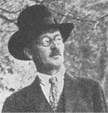
Antonín Bernášek se narodil v Kokovicích u Slaného, zemřel v Praze. Nedokončil studium práv, žil bohémským životem a toulal se po Evropě. Pod pseudonymem Karel Toman přispíval do řady českých časopisů. Vrcholem jeho tvorby je tematicky sevřený a formálně dokonalý cyklus 12 básní Měsíce.
|
Tomanova poezie
Tomanovo dílo není příliš rozsáhlé. Věnoval se především milostné a meditativní lyrice. Jeho poezie je plná rozporů – na jedné straně vyznává
revoltu a anarchismus jako jeho generační druhové, ale na straně druhé touží po životní harmonii. Často unikal pryč do ciziny, o to intenzivněji se ovšem hlásil stesk po domově. Hluboce prožíval pocit vyděděnectví a osamělosti. Toman debutoval básnickou sbírkou Pohádky krve, následovaly sbírky Torzo života, Melancholická pouť, Sluneční hodiny, Verše rodinné a jiné, Měsíce, Hlas ticha a Stoletý kalendář.
|
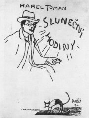
Gellnerův návrh na obálku Tomanovy básnické sbírky Sluneční hodiny
Která z Tomanových básní tě zaujala nejvíce? Proč?
|
Petr Bezruč (1867-1958)
Vladimír Vašek se narodil v Opavě a zemřel v Olomouci. Jeho otec se snažil dokázal nepravost Rukopisu zelenohorského a královédvorského, ale v roce 1879 to byl zcela ojedinělý názor a vysloužil si za něj označení zrádce národa... Syn se živil jako poštovní úředník. Čtyři roky (1898-1902) byl vážně nemocen, v této době vznikly jeho nejlepší básně. Používal řadu pseudonymů – Alter ego, Kuba Stopěruntík, Petr Bezperák nebo Smil z Rolničky, ale nejznámějším se stal Petr Bezruč. V době 1. sv. války byl zatčen a obviněn z velezrady pro domnělé autorství protirakouských básní, které vyšly v pařížském časopise českých emigrantů pod jménem Petr Bezruč. Naštěstí se prokázalo, že šlo o podvrhy a spisovatel byl po 6 měsících propuštěn. Kromě básnické sbírky Slezské písně vydal už jen několik básní, např. Stužkonoska modrá, a sbírku povídek – Povídky ze života. V závěru života si užíval oficiálních poct, stal se z něho jazykový purista a stylizoval se do nové role starého ještěra. Generačně ani názorově mezi anarchisty nepatří, ale měl podobný osud a jeho tvorba má k buřičství blízko.
V minulosti se opakovaně objevily spory o autorství Slezských písní. Co k nim mohlo dát podnět?
|
Petr Bezruč: Slezské písně
Bezruč je „autorem jedné knihy“. Na básnické sbírce Slezské písně pracoval celý život, někdy i ke škodě jednotlivých básní. Původně své básně zasílal anonymně Janu Herbenovi, který je tiskl v časopise Čas. Roku 1903 vyšlo tzv. Slezské číslo Besed Času s 31 básněmi Petra Bezruče. Slezské písně vyšly samostatně roku 1909. První vydání obsahovalo 45 básní, 9. vydání už 79 skladeb. Pro Bezručovy verše je typické autentické regionální umístění, a to jazykové i místopisné. Vynikají syntézou realismu, symbolismu a sociálních motivů. Autor se stylizuje do role barda slezského lidu a brání ho proti Němcům, Židům, Polákům, boháčům, Pražákům a dalším nepřátelům... Ve sbírce najdeme sociální balady – Maryčka Magdonova, Kantor Halfar, intimní lyriku – Labutinka, ohlasy lidové slovesnosti – Mohelnice, společenskou lyriku – Praga caput regni i básně vyzývající k revoltě – Ostrava.
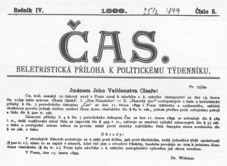
Konfiskační výnos k cenzurnímu zákazu Bezručových básní Škaredý zjev a Den Palackého
|

Jaký je tvůj názor na Bezručovu poezii?
Je jeho nesnášenlivost oprávněná?
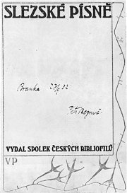
První vydání Bezručových Slezských písní z roku 1909
Bezručovy verše mají daktylský spád. Co to znamená?
Jaký je rozdíl mezi trochejem, jambem a daktylem?
Proč byl cenzurován Škaredý zjev?
|
Internetové stránky
Dyk
Dyk: Krysař
Hameln
Toman: Měsíce
Šrámkova Sobotka
Gellner: Hořká láska
Gellner
Mahen
Těsnohlídek
Exkurze
Hameln
Filmy
Krysař, režie J.Bárta (loutkový film)
Tipy
Martin Bastl: Anarchismus v České republice
Anarchismus
ČSAF
A-kontra, časopis
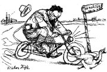
Hugo Boettinger: Viktor Dyk
|
Doporučená četba
Bezruč, Petr: Jen jedenkrát, Československý spisovatel, Praha 1980
Bezručův hlas, Památník pěvce Slezských písní, Čin, Praha 1940
Buriánek, František: Bezruč, Toman, Gellner, Šrámek, Československý spisovatel, Praha 1955
Buriánek, F.: Generace buřičů, Univerzita Karlova, Praha 1968
Buriánek, F.: Karel Toman, Melantrich, Praha 1985
Buriánek, F.: Petr Bezruč, Československý spisovatel, Praha 1987
Dyk, Viktor: Dramata a prózy, NLN, Praha 2003 (Zmoudření dona Quijota, Krysař...)
Dyk, V.: Opustíš-li mne..., Československý spisovatel, Praha 1973
Dyk, V.: Pět básnických knih, NLN, Praha 2003 (Milá sedmi loupežníků, Okno...)
Dyk, V.: Promenáda Diogenova, Československý spisovatel, Praha 1990
Gellner, František: Verše, Československý spisovatel, Praha 1980
Hrabák, Josef: Rudolf Těsnohlídek, Melantrich, Praha1982
Med, Jaroslav: Viktor Dyk, Melantrich, Praha 1988
Mourková, Jarmila: Buřiči a občané, Československý spisovatel, Praha 1988
Myšička, Z.: Viktor Dyk, Praha 1971
Neumann, Stanislav Kostka: Básně I, SNKLU, Praha 1962
Polák, Josef: Petr Bezruč, Melantrich, Praha 1977
Šrámek, Fráňa: Modrý a rudý, Stříbrný vítr, Léto, Splav, NLN, Praha 2000
Toman, Karel: Básně, Československý spisovatel, Praha 1977
Toman, K.: Addio’ mecenáši, Československý spisovatel, Praha 1970
Toman, K.: Hlas hlubin, Odeon, Praha 1982
Tomek, Václav: Český anarchismus a jeho publicistika 1890-1925, Filosofia, Praha 2002
Urbanec, Jiří: Petr Bezruč – Vladimír Vašek, 1904-1928, Základní životopisná data, Profil, Ostrava 1989
Vlašín, Štěpán: Jiří Mahen, Melantrich, Praha 1972
V tvou korunu, živote, Výbor z básnické tvorby F.Gellnera, K.Tomana, F.Šrámka, Práce, Praha 1989
|
Vypracuj písemný referát o některé z uvedených knih.
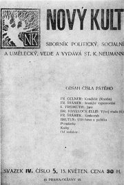
Časopis Nový kult z roku 1901
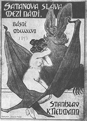
Obálka Neumannovy básnické sbírky Satanova sláva mezi námi
|
|